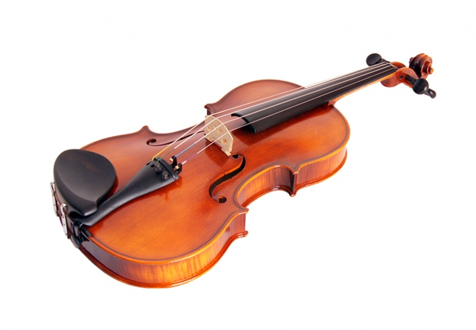
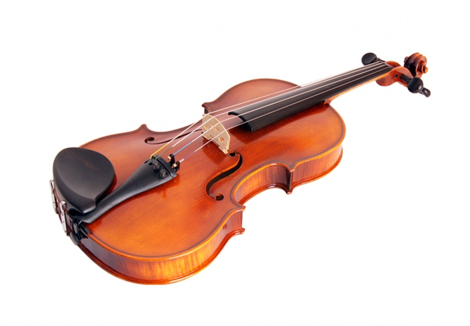

Smuikai
2020.10.30 03:35
Krepšelis
Krepšelis tuščias Rodyti krepšelį
(0.00 Lt.) +370 694 64178 Naujos prekės KOLONĖLIŲ NUOMA Kaip išsirinkti gitarą? Prekės (mob. versija) Į Pradžią KONTAKTAI
Gitaros
Mušamieji
Styginiai instrumentai bei priedai
Pučiamieji
Klavišiniai instrumentai bei priedai
Priedai gitaroms
Audio technika
Instrumentai vaikams
Pagrindinis Styginiai Smuikai Rūšiuoti pagal Prekės kaina -/+ Gamintojas: Stagg Rezultatai 1 - 11 iš 1120 40 80 200
Smuikai
Smuikas Stagg VN-1/2 EF (+ smičius ir dėklas)
1/2 dydžio smuikas Stagg VN-1/2 EF....
Prekės informacija 95,00 € 114,00 € (393.62 Lt. )Smuikas Stagg VN-3/4 EF (+ strykas ir dėklas)
3/4 dydžio smuikas Stagg VN-3/4 EF,...
Prekės informacija 95,00 € 114,00 € (393.62 Lt. )Smuikas Stagg VN-4/4 EF (+ smičius ir dėklas)
4/4 dydžio smuikas Stagg VN-4/4 EF,...
Prekės informacija 95,00 € 114,00 € (393.62 Lt. )Smuikas Stagg VN-1/8 (+ smičius ir dėklas)
1/8 dydžio smuikas, pagamintas iš klevo...
Prekės informacija Norėdami užsakyti praneškite mums 115,00 € (397.07 Lt. )Smuikas Stagg VN-1/2 (+ smičius ir dėklas)
1/2 dydžio smuikas, pagamintas iš klevo...
Prekės informacija Norėdami užsakyti praneškite mums 124,00 € (428.15 Lt. )Smuikas Stagg VN-3/4 (+ smičius ir dėklas)
Prekės informacija Norėdami užsakyti praneškite mums 128,00 € (441.96 Lt. )Smuikas Stagg VN-4/4 (+ smičius ir dėklas)
Prekės informacija Norėdami užsakyti praneškite mums 125,00 € 137,00 € (473.03 Lt. )Smuikas Stagg VN-1/4 EF (+ smičius ir dėklas)
1/4 smuikas, pagamintas iš medžio...
Prekės informacija Norėdami užsakyti praneškite mums 169,00 € (583.52 Lt. )Smuikas Stagg VN-4/4 SB (+ smičius ir dėklas)
Prekės informacija Norėdami užsakyti praneškite mums 187,00 € (645.67 Lt. )Smuikas Stagg VN-3/4 HG (+ smičius ir dėklas)
Prekės informacija Norėdami užsakyti praneškite mums 359,00 € (1,239.56 Lt. )Smuikas Stagg VN-4/4 HG (+ smičius ir dėklas)
Prekės informacija Norėdami užsakyti praneškite mums 379,00 € (1,308.61 Lt. ) Apie mus Kodėl verta rinktis Grojam ? Kontaktai Kur mokytis groti ?
STRAIPSNIAI
Kaip išsirinkti gitarą?
Pirmoji gitara: akustinė ar klasikinė?
Kaip suderinti gitarą?
Gitarų dydžiai
PAGALBA
PRISTATYMAS
Pinigų grąžinimo garantija
Kaip išsirinkti ir nusipirkti gitarą ?
Instrumentų priežiūra
Klientų atsiliepimai
PREKĖS
Gitaros
Mušamieji
Styginiai
Nešiojamos aktyvios kolonėlės
Klavišiniai
Priedai
Audio technika
Instrumentai vaikams
Turite klausimų? Norite užsakyti? Informacija teikiama ir užsakymai priimami telefonu +37069464178 ir el. paštu info@grojam.lt © 2013-2020 Grojam.lt
- smuikas - išsamiai DELFI.lt
- Smuikas – RUDAMINOS MENO MOKYKLA
- Smuikas Strunal 160 4/4 | Tamsta - Muzikos prekių parduotuvė
- Menų studija „Žaismas“ » Smuikas
- Smuikas - Life is music
- Smuikas - Cantores David
- Smuikas – ELIP (Enciklopedija Lietuvai ir pasauliui)
- Smuikas "VIVENTE" - MUSICstudio
- smuikas - Paslaugos.lt portalas Nr.1
- Smuikas – Pažink instrumentus!
- smuikas - išsamiai DELFI.lt
Smuikas, kas tai? Tai, – styginis instrumentas turintis keturias stygas, suderintas kvintomis*. Jis yra pats mažiausias ir aukščiausiai suderintas instrumentas, priklausantis smuiko šeimai. Smuiko istorija - pirmą kart smuikas pasirodė šiaurės Italijoje ankstyvame XIVa. Manoma, kad pirmieji smuikų gamintojai sudėjo tris skirtingus to meto muzikinių instrumentų tipus: senovinį ...
- Smuikas – RUDAMINOS MENO MOKYKLA
Smuikas – styginis instrumentas turintis keturias stygas, suderintas kvintomis.Žemiausia styga yra G („sol“). Tai yra pats mažiausias ir aukščiausiai suderintas instrumentas, priklausantis smuiko šeimai. Šiai šeimai taip pat priklauso violončelė ir altas.Panašus gaubtas styginis kontrabosas praktiškai priklauso tai pačiai, bet šiek tiek atskirai violų šeimai.
- Smuikas Strunal 160 4/4 | Tamsta - Muzikos prekių parduotuvė
Smuikas tai styginis instrumentas dažiausiai turintis keturias stygas ir grojamas su stryku. Smuikai gali būti įvairių dydžių nuo 4/4 iki 1/64. Tai reiškia, kad kuo didesnis dydžio vardiklis tuo mažesnis bus smuikas. 4/4 dydžio smuikas dar vadinamas pilno dydžio smuiku. Šis smuikas skirtas suaugusiems.
- Menų studija „Žaismas“ » Smuikas
Smuikas – styginis instrumentas turintis keturias stygas, suderintas kvintomis. 90 santykiai.
- Smuikas - Life is music
Smuikas (pasiklausykite) – styginis instrumentas, kuris ankstyvajame XVI a. pasirodė šiaurės Italijoje. Tai pats mažiausias ir aukščiausiai suderintas instrumentas, priklausantis smuiko šeimai. Šiai šeimai taip pat priklauso violončelė ir altas.
- Smuikas - Cantores David
Taigi šio darbo objektas – smuikas lietuvių liaudies kultūroje. Tikslai: aprašyti, kokie buvę pirmieji smuikai, kaip, kur ir iš ko gaminami, kokiose vietovėse ir kokiu laikotarpiu naudojami, kokie papročiai apipynę grojimą smuiku.
- Smuikas – ELIP (Enciklopedija Lietuvai ir pasauliui)
Raskite paslaugas pagal raktažodį smuikas visoje Lietuvoje. Darbų pavyzdžiai, paslaugų kainos, rekomendacijos.
- Smuikas "VIVENTE" - MUSICstudio
muzika, smuikas, Groti smuiku, mergina smuikas, Klasikinė muzika, klasikinis, žaisti; 2202x1468px
- smuikas - Paslaugos.lt portalas Nr.1
Smuikas "HIDERSINE" Klevo mediena (light flamed maple) 220.00€ Dydis:
- Smuikas – Pažink instrumentus!
Smuikas – styginis instrumentas turintis keturias stygas, suderintas kvintomis. Smuikas pasirodė šiaurės Italijoje ankstyvame XIV a. Manoma, kad pirmieji smuikų gamintojai sudėjo tris skirtingus to meto muzikinių instrumentų tipus: senovinį tristygį smuiką, Renesanso fidelį ir lyrą.
Smuikas, kas tai? Tai, – styginis instrumentas turintis keturias stygas, suderintas kvintomis*. Jis yra pats mažiausias ir aukščiausiai suderintas instrumentas, priklausantis smuiko šeimai. Smuiko istorija - pirmą kart smuikas pasirodė šiaurės Italijoje ankstyvame XIVa. Manoma, kad pirmieji smuikų gamintojai sudėjo tris skirtingus to meto muzikinių instrumentų tipus: senovinį ...
Smuikas – styginis instrumentas turintis keturias stygas, suderintas kvintomis.Žemiausia styga yra G („sol“). Tai yra pats mažiausias ir aukščiausiai suderintas instrumentas, priklausantis smuiko šeimai. Šiai šeimai taip pat priklauso violončelė ir altas.Panašus gaubtas styginis kontrabosas praktiškai priklauso tai pačiai, bet šiek tiek atskirai violų šeimai.
Smuikas tai styginis instrumentas dažiausiai turintis keturias stygas ir grojamas su stryku. Smuikai gali būti įvairių dydžių nuo 4/4 iki 1/64. Tai reiškia, kad kuo didesnis dydžio vardiklis tuo mažesnis bus smuikas. 4/4 dydžio smuikas dar vadinamas pilno dydžio smuiku. Šis smuikas skirtas suaugusiems.
Smuikas – styginis instrumentas turintis keturias stygas, suderintas kvintomis. 90 santykiai.
Smuikas (pasiklausykite) – styginis instrumentas, kuris ankstyvajame XVI a. pasirodė šiaurės Italijoje. Tai pats mažiausias ir aukščiausiai suderintas instrumentas, priklausantis smuiko šeimai. Šiai šeimai taip pat priklauso violončelė ir altas.
Taigi šio darbo objektas – smuikas lietuvių liaudies kultūroje. Tikslai: aprašyti, kokie buvę pirmieji smuikai, kaip, kur ir iš ko gaminami, kokiose vietovėse ir kokiu laikotarpiu naudojami, kokie papročiai apipynę grojimą smuiku.
Raskite paslaugas pagal raktažodį smuikas visoje Lietuvoje. Darbų pavyzdžiai, paslaugų kainos, rekomendacijos.
muzika, smuikas, Groti smuiku, mergina smuikas, Klasikinė muzika, klasikinis, žaisti; 2202x1468px
Smuikas "HIDERSINE" Klevo mediena (light flamed maple) 220.00€ Dydis:
Smuikas – styginis instrumentas turintis keturias stygas, suderintas kvintomis. Smuikas pasirodė šiaurės Italijoje ankstyvame XIV a. Manoma, kad pirmieji smuikų gamintojai sudėjo tris skirtingus to meto muzikinių instrumentų tipus: senovinį tristygį smuiką, Renesanso fidelį ir lyrą.
 
